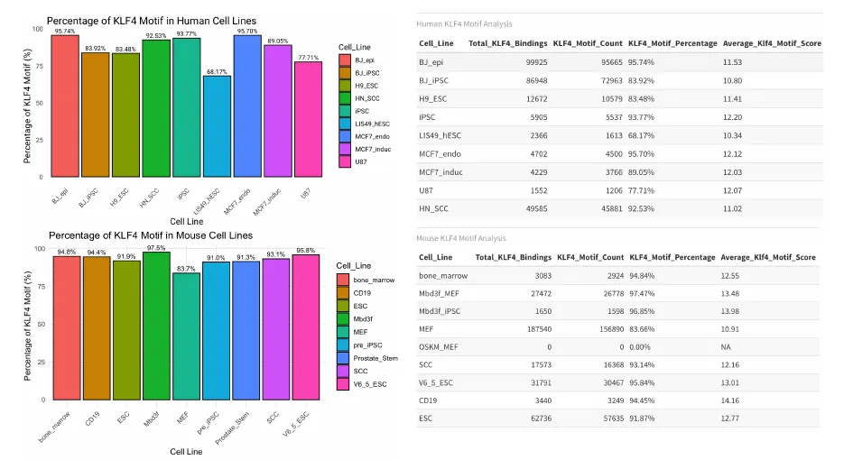
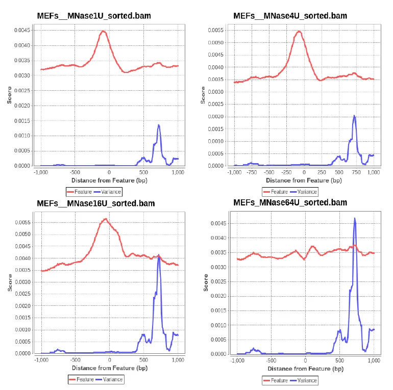
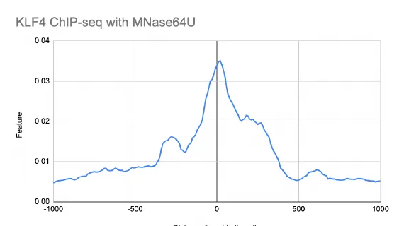

Computational Biology Researcher, Jacobs School of Medicine, University at Buffalo (mentor: Dr. Michael Buck) · McNair Scholars · 2022 to 2025
Predicting Where the Pioneer Factor KLF4 Binds, and Why
A machine-learning study of what separates KLF4 binding in one cell type from another, built on a compendium of public ChIP-seq data.
The problem
KLF4 is a Yamanaka factor and a pioneer transcription factor: it can bind DNA wrapped in nucleosomes. Its core motif does not explain everything, since KLF4 also binds where the motif is absent, so cofactors and histone marks must matter.
The goal was to curate the data, engineer the features, and train models that show which features separate KLF4 binding in one cell type from another.
What I did
Build a clean compendium
KLF4 ChIP-seq samples from the Cistrome database, filtered for quality (FastQC median at least 25, more than 1,000 peaks, fraction of peaks in DNase-hypersensitive sites above 0.7). Samples were concatenated, irregular chromosomes dropped, overlapping peaks merged keeping the first, and every peak tagged by cell line. Result: 203,018 human and 323,112 mouse binding peaks.
Engineer features per peak
FIMO scores for the KLF4 motif (presence, score, count, strand, total score), 10 cofactor motifs found by MEME-ChIP in discriminative mode (MCF7 versus iPSC), and overlaps with 13 histone marks in MCF7 and 5 in head and neck squamous carcinoma (HNSCC) from ENCODE. That is 56 columns per peak.
Look at the nucleosome context
MNase-seq at several digestion levels, visualized with ArchTEx. The 64-unit sample gave the sharpest nucleosome positioning, so it became the reference for plotting KLF4 binding.
Train and compare models
Random forests (500 trees) separating cell-line-exclusive peaks: MCF7 versus HNSCC, then BJ-derived iPSC versus HNSCC.
Code
# Sorts first by the first column (chromosome), then the start, and finally end coordinates, also removes any duplicates
sort -k1,1 -k2,2n -k3,3n -u all_original_peaks.bed > master_all_distinct_peaks.bed
echo "Done with sorting"
Bash: merge samples, keep valid chromosomes, sort
bedtools getfasta -fi hg38.fa -bed humanmaster.bed -fo humansequence.fa
# ...
fimo --thresh 1e-3 --max-stored-scores 1000000 --parse-genomic-coord -oc humanmotif human.meme humansequence.fa
Bash: FIMO motif scan on peak sequences
bedtools intersect -a "$TEMP_KLF4_BED_WITH_IDS" -b "$H3K4ME3_BED_FILE" -u | cut -f4 | sort -u > "$TEMP_OVERLAPPING_IDS"
Bash: which peaks overlap a histone mark
rf_model_diff <- randomForest(Binding_Specificity ~ ., data = train_data,
ntree = 500,
importance = TRUE,
do.trace = 100) # Print progress every 100 trees
message("Differential binding model training complete.")
R: random forest on cell-line-exclusive peaks
Results




| Model | Accuracy (95% CI) | No-information rate | Balanced accuracy | Kappa |
|---|---|---|---|---|
| MCF7 vs HNSCC | 94.14% (93.77 to 94.50) | 90.05% | 0.753 | 0.607 |
| BJ iPSC vs HNSCC | 84.47% (84.09 to 84.85) | 65.67% | 0.818 | 0.649 |
| Top features, BJ iPSC vs HNSCC | Mean decrease in Gini |
|---|---|
| ZNF213 motif score | 3,368 |
| ZBTB6 motif score | 3,174 |
| ZNF460 motif score | 2,134 |
| FOSL2 motif score | 2,006 |
| Total motif score | 1,740 |
What I learned and what I would do differently
- The 94% model is less impressive than it looks: HNSCC peaks outnumber MCF7 peaks about nine to one (47,700 versus 5,276), the no-information rate is already 90%, and specificity is only 52%. Swapping MCF7 for BJ-derived iPSC (78,287 peaks) balanced the classes and accuracy fell to 84%, which tells me the two cell lines share much of their feature space.
- Next time I would split train and test by chromosome so neighboring peaks cannot leak across the split, add class weights, and use permutation importance, since Gini importance favors continuous features.
- The most useful result is the plain one: KLF4 binds many sites with no canonical motif, and cofactor motif scores rank above the KLF4 motif score for telling cell lines apart.
Tools
Links
KLF4 binding is shaped by cofactor motifs and histone context, not the KLF4 motif alone.